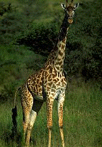
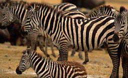
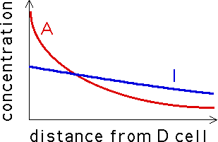
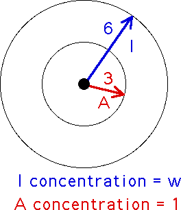
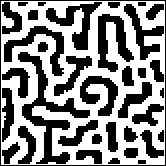

|  | |
|  |
With all due apologies to Kipling, we present a different view.
An interesting example of self-organization in nature is the problem of understanding how spots and stripes appear on the skins of some animals. Such patterns often serve as camouflage and so have definite survival value, but how is this information transmitted down the generations? Since leopard spots are not arranged in identical patterns from one individual to the next, there must be some amount of randomness involved, and yet the patterns of leopards are certainly distinguishable from those of tigers, so there must be some mechanism which differs across species. What is this mixture?
One of the first models was proposed by Alan Turing, one of the early workers in the field of artificial intelligence. Here we present David Young's variant, based on cellular automata.
We know the early embryonic skin of a leopard (or tiger, or zebra, or giraffe, or ... ) is covered with a distribution of melanocytes (pigment cells). These cells can be in one of two states: differentiated (denoted D) and undifferentiated (denoted U). Color is produced by the D cells, not by the U cells. Also, the D cells secrete two morphogens, an inhibitor (I) and an activator (A). Both chemicals diffuse away from each D cell, their concentration decreasing with distance from the D cell. The A concentration is higher near the D cell, but falls off more quickly than the I concentration and so at some distance from the D cell, the I concentration exceeds the A concentration from that cell.
|  |
Every cell is constantly awash in A and I morphogens from all the nearby D cells. If at a U cell, the A concentration exceeds the I concentration, the cell becomes D and starts secreting morphogens on its own. If at a D cell, the I concentration exceeds the A concentration, the cell becomes U and stops producing morphogens. The evolution of patterns on animals' skins is thought to be the a form of self-organization of D cells, resulting from the chemical feedback loops just described.
Young's idea was to model the animal skin by a square array of cells, each a melanocyte and so in one of two states: live (for differentiated) and dead (for undifferentiated). Since the morphogens diffuse in roughly circular patterns, the neighborhood of a cell now is taken to be all the cells within a circle about the given cell. We take the circle to have radius six cells. Every D cell within this circle is secreting morphogens which reach the central cell. If a D cell is close enough to the center (we'll say within a circle of radius three from the center), then it contributes A morphogens to the central cell. Every D cell farther than three away from the center (but still no farther away than six) contributes I morphogens to the central cell. Young simplified the model by assuming the A concentration is fixed at 1, constant for all D cells within three of the center, and the I concentration is some other number, w, constant for all D cells in the ring-shaped region between three and six from the center.
|  |
The automaton rule then is this: count up all the D cells in this ring and call this number ID, count up all the D cells in the circle of radius three and call this number AD. Then
| if AD - w*ID > 0 set the central cell to D, |
| if AD - w*ID < 0 set the central cell to U, |
| if AD - w*ID = 0 leave the central cell unchanged. |
The animation shows the the tenth generations for an 80 by 80 array, in each case starting from an initial random distribution. Only w, the inhibitor concentration parameter, has changed from one picture to the next. Note that for small inhibitor concentration, most of the cells become differentiated (black), while as the inhibitor concentration is increased, the pattern evolves through stripes to black spots on a white (undifferentiated) background. Click the picture to see the animation.
|  |
The stripes shown here lack the preferred vertical direction of zebra and tiger stripes, but this can be produced through a modification of the model: make the neighborhood elliptical, and the activator neighborhood a smaller ellipse with its long axis perpendicular to the long axis of the big ellipse. In biological systems, these elliptical neighborhoods suggest some mechanical forces are at work in addition to purely biochemical diffusion, but we won't pursue this topic. What do you think would happen if the axes of the ellipses were not perpendicular?
Though certainly a simplification, this model suggests an appealing parsimony: the same mechanism is responsible for the formation of stripes and spots, and the only species-specific information to be transmitted is the inhibitor concentration. Too simple? Yes. Suggestive? Certainly.
{kind=link}